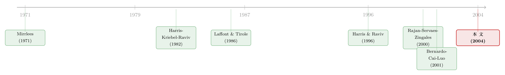

好项目，凭什么自己说了算？——把资本预算和工资条捆成同一道题
本文读的是 Bernardo, Cai & Luo (2004, Review of Financial Studies)：在一家总部看不穿项目质量、也管不住经理努力的多部门公司里，最优的「资本预算 + 薪酬合约」其实是同一件东西——总部用「低底薪 + 高分成」逼着越乐观的经理「自己掏钱买股份」，从而把真话和努力一起换出来。代价是资本系统性地投得太少，而且一个部门投多少，要看「隔壁」部门有多好。
1 一个总部每天都要做、却几乎做不对的决定
先想象一家公司：它有两个事业部，一个卖电脑硬件，一个卖配套服务。每个部门有一位经理，常年泡在一线，对自己这摊生意的需求有着总部永远到不了的体感。年初，总部要拍板：给硬件部多少钱、给服务部多少钱。
问题在于，总部凭什么拍板？它只能听两位经理「汇报」。而经理的汇报——用本文的话说——是不可验证、不可写进合约的（nonverifiable, noncontractible）。更麻烦的是，钱拨下去之后，项目能不能做成，还要靠经理愿不愿意「使劲」：硬件部经理手里那批老客户关系，能不能顺手用来卖服务？这份「使劲」（论文统一叫它 努力（effort））同样既看不见、也写不进合约。
于是总部被夹在两层信息墙之间：事前，它不知道项目到底好不好（这是 逆向选择（adverse selection））；事后，它管不住经理出不出力（这是 道德风险（moral hazard））。
接着，一个自然的问题是：总部手里到底有几件武器？答案是两件——资本（capital） 和 薪酬（compensation）。过去的文献几乎总是把这两件事拆开来谈：要么固定一套工资，单独研究怎么分钱（如 Harris, Kriebel & Raviv, 1982）；要么固定一套预算规则，单独研究怎么发奖金。本文真正关键的一步，是把这两件武器焊死在一起，当成一道联立的机制设计题来解。
而一旦你把它们放进同一道题，会冒出一个相当漂亮、也相当反直觉的结论——这正是全文我想反复讲透的那个核心。
2 核心张力：怎么让「说自己项目好」变得诚实？
让我们把张力压缩到一句话：经理总有动机说「我的项目特别好，多给我点钱」。总部怎么让这句话变得可信？
直觉上的笨办法是「谁说得好就奖谁」，但这只会鼓励所有人往死里吹。本文给出的解法精巧得多：报告越乐观的经理，底薪越低、分成越高。
为什么这能治住吹牛？因为分成高、底薪低，等于逼着经理用自己未来的工资去「买」这个项目的现金流份额。一个真心觉得项目好的经理，乐意接这笔买卖——他赌的是自己看好的现金流；而一个其实没那么有把握、只是想骗预算的经理，面对「低底薪 + 高分成」会犯怵：万一项目平庸，他既丢了底薪、分成也兑不了现。于是吹牛在事前就被「定价」劝退了。
这套逻辑和 Laffont & Tirole (1986) 监管一家成本未知的垄断企业如出一辙：让效率高的企业选「高powered、低补贴」的合约，用合约菜单把类型筛出来。本文把它从「一个监管者 vs 一家企业」搬到了「一个总部 vs 两个经理」，并且额外塞进了「资本怎么配」这件监管文献里没有的事。
这就解释了为什么资本预算和薪酬必须一起设计：分成率本身就是筛选真话的工具，而筛选是要花钱的——这笔钱，最后会从资本预算里扣出来。
3 模型：把直觉写成方程
本文是一篇标准的机制设计论文，模型设定干净，值得一步步走一遍。
现金流。 部门 \(i\)（\(i=1,2\)，另一部门记为 \(j\)）的项目现金流为
$$V_i = n k_i + (a e_i + b e_{ji}) k_i + (d t_i + f t_j) k_i - 0.5 k_i^2 + \varepsilon_i$$
逐项来看：\(k_i\) 是配给项目 \(i\) 的资本；\(t_i\) 是经理 \(i\) 的私有信息（项目质量信号）；\(e_i\) 是经理 \(i\) 在自己项目上的努力，\(e_{ji}\) 是经理 \(j\) 投到项目 \(i\) 上的努力。参数 \(d\ge f\ge 0\) 决定两份信息谁更重要，\(a\ge b\ge 0\) 决定哪份努力更管用——「\(\ge\)」捕捉的是「经理对自家项目影响更大」。注意 \(-0.5k_i^2\) 是资本的递增边际成本，而 \(k_i\) 同时乘在努力项和质量项上：这意味着资本与努力、资本与质量都是互补的，给好项目多投钱、配多出力，回报会加速增长。这是全文结果的引擎。
经理的偏好。 经理风险中性，但出力有私人成本：
$$EU_i = E w_i - 0.5 g (e_i^2 + e_{ij}^2)$$
其中 \(g\) 衡量努力的边际成本。
信息结构。 \(t_i\) 服从分布 \(F(\cdot)\)、密度 \(f(\cdot)\)，且 逆风险率（inverse hazard rate）\(m(t_i)=\big(1-F(t_i)\big)/f(t_i)\) 随 \(t_i\) 递减（均匀分布、截断正态都满足）。记住这个 \(m\)，它就是后面所有「扭曲」的来源。
3.1 先看第一好（first-best）这把尺子
如果总部能直接看到 \(t_i\) 和努力，它会按 Proposition 1 配置：
$$k_i^{FB} = \left(1-\frac{a^2}{g}-\frac{b^2}{g}\right)^{-1}(n+d\,t_i+f\,t_j)$$
$$e_i^{FB}=\frac{a\,k_i^{FB}}{g},\qquad e_{ji}^{FB}=\frac{b\,k_i^{FB}}{g}$$
这把尺子很顺眼：项目越好（\(t_i,t_j\) 越大）、努力越管用（\(a,b\) 越大）、出力越便宜（\(g\) 越小），就投越多。这是没有信息墙时的理想世界。
3.2 真正的好戏：第二好（second-best）
现在把信息墙立起来。由 显示原理（revelation principle），总部只需在「让经理都说真话」的直接机制里找最优解。Proposition 2 给出的最优资本配置是——
把它和 \(k_i^{FB}\) 并排一看，差别就一项：多减了一块 \(d\,m_i+f\,m_j\)。这块就是信息租金的「影子价格」。它从哪来？为了让某个类型 \(t_i\) 的经理不假装成更高类型，总部必须给所有比他差的类型留一笔「信息租」（incentive compatibility 给出的约束，见论文式 (5)）：
$$EU_i(t_i)=\bar{U}+\int_0^{t_i}\!\!\int_0^{\bar{t}}\big(d\,b_i k_i+f\,b_{ij}k_j\big)\,dF_j\,ds_i$$
注意：每多给高质量项目一分资本或一分分成，这笔要付给所有更高类型的租金就更贵。于是总部的最优反应是对资本和分成都「手紧一点」——尤其对那些低 \(t_i\) 的经理。结论干脆利落：公司系统性地投资不足，经理也系统性地少出力（相对第一好）。
而薪酬那一侧，最优合约是两个部门现金流的线性函数：
$$w_i = a_i + b_i V_i + b_{ij} V_j$$
其中分成率
$$b_i = 1-\frac{d\,g\,m_i}{a^2 k_i},\qquad b_{ij}=1-\frac{f\,g\,m_i}{b^2 k_j}$$
看见那个「\(1-\,\cdots\)」了吗？第一好里经理本该拿到「全额产权」式的高powered激励，而信息墙把分成率从 1 往下压，压下去的幅度正比于 \(m_i\)——又是逆风险率。底薪 \(a_i\) 则随报告质量递减：经理说自己项目越好，就拿越低的底薪、越高的分成。这正是第 2 节那句话的数学版本——逼乐观的人「自己掏钱买股份」。
一个容易被忽略的优雅之处：这个机制可以用 占优策略（dominant strategies）实现，对每个经理「猜对方会怎么干」毫不敏感；而且加性噪声 \(\varepsilon_i\) 完全不影响最优合约——因为所有人都风险中性，噪声不改变「道德风险 vs 逆向选择」这对核心权衡，自然不进合约。这一点和有风险厌恶时「信息含量原则」（informativeness principle）要把噪声写进合约形成了鲜明对照。
4 反转：为什么是「只投不足」，而不是「时多时少」？
讲到这里，本文最锋利的一刀才落下。
Harris, Kriebel & Raviv (1982) 那一脉的经典结论是：多部门公司里会同时出现投资过度和投资不足的区域。可本文偏偏只得到单一方向的投资不足。两个看似都很合理的模型，怎么会打架？
本文的回答一针见血：差别不在「信息」，而在合约是不是内生的。前人把薪酬合约当成外生给定的参数，于是经理对资本的偏好（爱权、爱花钱）会在某些区域把投资顶过头；而本文让总部同时优化资本和薪酬，分成率会随质量内生调整，恰好把「过度投资」的那股劲儿吸收掉，只剩下信息租金造成的、方向一致的「投资不足」。
换句话说：一旦你承认工资条是可以一起设计的，投资过度这件事就没有了存在的理由。 这是「把两件武器焊在一起」最值钱的副产品。
（关于「老板偏好的项目类型如何被一纸合约纠偏」，可参见《老板为什么偏爱「说不清」的项目？》；关于「保留否决权反而诱发下属虚报预算」的相邻机制，可参见《保留否决权的代价》。）
5 隔壁的项目，决定了你的预算
模型还顺手吐出一组别处少见的横截面预测，而它们几乎都绕着同一根轴：部门之间的「联动」。
由于 \(k_i\) 里带着 \(f\,t_j\)（信息溢出）和 \(b\,e_{ji}\)（努力溢出），本文给出 Corollary 1：一个部门的投资，正向取决于另一个部门投资机会的质量——而且当「经理间的资源共享更重要」「经理自由裁量权更大」「经理的公司专用人力资本更多」时，这种联动更强。
这恰好给内部资本市场的实证文献提了个醒。Lamont (1997)、Shin & Stulz (1998) 长期争论：一个部门的投资对其他部门的现金流「过度敏感」，到底是无效率的乱花钱，还是别的什么？本文说：别急着扣「无效率」的帽子——在最优机制下，多部门公司本就该在「隔壁有戏」时多投、在「隔壁拉胯」时少投，这是设计出来的、而非扭曲出来的敏感性。
（关于用「分拆」给内部资本市场做活体解剖，可参见《拆开来看，钱才流到对的地方》；关于「公司越大、吹牛的人越多」这条平行的抢预算暗线，可参见《公司越大，吹牛的人越多》。）
另一条预测同样新鲜：当经理控制的资源在别的部门更值钱时（\(b\)、\(f\) 相对更大），合约里公司层面的业绩薪酬会相对压过部门层面的业绩薪酬。这与 Bushman, Indjejikian & Smith (1995) 和 Keating (1997) 的经验证据吻合——把奖金挂到全公司，是为了让经理愿意把自己的关系、人脉「外借」给隔壁。
6 文献脉络
这条线的源头在 Mirrlees (1971) 的最优所得税——逆风险率 \(m(t)\)、「顶端不扭曲」这些机制设计语言都从那里来。接着，Laffont & Tirole (1986) 把「逆向选择 + 道德风险」的核心权衡装进了垄断监管，并证明了线性合约的最优性，本文的证明技术几乎是它的「公司金融翻译版」。
在公司内部资源配置这一支，Harris, Kriebel & Raviv (1982) 与 Antle & Eppen (1985) 最早把私有信息和「爱要资本」的偏好写进多部门公司，但他们关心的是转移定价、且合约外生，于是得到了「时多时少」的投资。Harris & Raviv (1996, 1998) 进一步刻画了资本预算流程与授权。到了 Rajan, Servaes & Zingales (2000)，焦点转向部门经理的寻租与「多元化折价」，但激励方案仍是外生的。

本文最直接的前身是 Bernardo, Cai & Luo (2001) 那篇单部门的 JFE 文章；本篇把它推广到两个有信息与生产联动的部门，于是「隔壁项目影响本部门预算」「公司级 vs 部门级薪酬的此消彼长」这些只有在多部门世界里才存在的预测，才第一次被干净地解出来。它在这条脉络里的位置，是第一篇把资本预算与薪酬合约在多部门、双向溢出框架下联合内生求解的理论文章。
7 评论与延伸（Q&A + 研究方向）
Q：这和普通的「逆向选择」筛选模型有什么不一样？
多了两样东西：一是资本配置这个连续的实物决策（不只是发不发奖金），二是双向溢出（一个经理的信息和努力会进另一个部门的现金流）。正是溢出，让「隔壁质量决定本部门预算」成为最优，而非扭曲。
Q：为什么噪声 \(\varepsilon_i\) 进不了合约，这不反直觉吗？
因为所有人风险中性。噪声既不改变「道德风险 vs 逆向选择」的权衡，也不带来风险分担需求。一旦经理风险厌恶，结论会反过来——那时信息含量原则会把噪声写进分成率。作者保留噪声只是为了说明结论对随机现金流依然成立。
Q：「只有投资不足、没有投资过度」这个结论稳吗？
它死死依赖于薪酬内生。作者自己点明：前人之所以得到过度投资，是因为把合约外生固定。这既是本文的卖点，也是它的软肋——现实里合约的可调维度远比模型少，外生约束一旦绑上，过度投资就可能回来。
Q：经理风险中性 + 总部能完全承诺，这两条假设有多关键？
都很关键。承诺让总部能在 date 0 锁死「按报告配资本」，否则它会在 date 2 反悔、经理也就不肯说真话；风险中性则让「逼经理买股份」不付任何风险溢价的代价。放松任一条，机制都会变形。
Q：模型说公司级薪酬该压过部门级薪酬，可现实里部门经理奖金大多挂在部门 KPI 上？
模型的预测是条件式的：只有当经理资源「在别处更值钱」（\(b,f\) 大）时，公司级薪酬才该占上风。对资源外溢弱的部门，部门级 KPI 仍是最优——这恰好可以拿去做横截面检验。
Q：这对「多元化折价」之争意味着什么？
它给折价提供了一个非扭曲的解释通道：多部门公司天然会让投资对「兄弟部门」敏感，这种联动在外部看像是乱配资本，实则是机制最优。要把「无效率折价」从「最优联动」里识别出来，需要能观测到资源溢出强度的代理变量。
几个可能的研究问题与提案：
-
把这套机制搬到「信用市场 / 公司债」语境。 【经济故事】集团内部不同子公司向同一财务公司「要额度」，与本文「要资本」同构；债权人对子公司质量同样信息不对称。能否用内部贷款利率与担保结构，复刻「低底价 + 高分成」式的筛选？【可行性】中：理论改造直接，但内部资金价格数据稀缺，识别偏难。
-
检验「隔壁质量 → 本部门投资」的内生联动。 【经济故事】本文预测该敏感性随资源共享重要性、经理裁量权、专用人力资本上升而增强。【可行性】中高：用分部门报告（segment data）+ 行业相关度构造「隔壁机会质量」，以经理任期/行业相邻度代理资源共享强度做交互项；难点在排除共同行业冲击。
-
公司级 vs 部门级薪酬比重的横截面检验。 【经济故事】资源外溢越强，公司级业绩薪酬占比应越高。【可行性】高：薪酬披露（尤其高管与事业部负责人）+ 业务关联度可直接构造，接续 Bushman et al. (1995) 与 Keating (1997)。
-
外资持有人作为「外部监督者」的变体。 【经济故事】当外资机构进入并施压信息披露，相当于削弱了 \(m_i\)（降低信息不对称），模型预言投资不足缓解。【可行性】中：需要持股结构 + 投资—机会敏感度数据，识别可借鉴持股变动的准自然实验。
-
承诺缺失下的动态版本。 【经济故事】去掉「完全承诺」，让总部每期可重新议价，看「投资不足」是否被「棘轮效应」放大。【可行性】低：动态机制设计闭式解极难，更适合数值刻画。
我的判断
这篇文章的贡献清晰且持久：它把「资本预算」和「管理层薪酬」第一次在多部门、双向溢出的框架里联合内生地解了出来，并由此澄清了一桩老公案——投资过度的幻象，多半是「合约外生」这条假设的产物，而非信息本身。低底薪—高分成的筛选机制、信息租金驱动的单向投资不足、以及「隔壁质量决定本部门预算」的横截面预测，都既漂亮又可检验。
对识别（这里指模型内部逻辑的稳健性）我的担忧集中在三处：完全承诺、风险中性、以及线性互补的现金流函数。这三条任何一条松动，结论的方向都可能改变——尤其承诺，现实中的总部很难做到 date 0 一诺千金。
后续我最想看到的，是有人真的拿分部门数据去检验那条「兄弟部门联动随资源共享强度增强」的预测，并把它和「多元化折价是否无效率」之争对接起来。如果这条交互项在数据里站得住，那么本文最大的政策含义——别把投资对兄弟部门的敏感性一律当成无效率——就能从理论走进实证。
参考文献
Antle, R., and G. Eppen (1985). Capital Rationing and Organizational Slack in Capital Budgeting. Management Science 31, 163–174.
Bernardo, A. E., H. Cai, and J. Luo (2001). Capital Budgeting and Compensation with Asymmetric Information and Moral Hazard. Journal of Financial Economics 61, 311–344.
Bernardo, A. E., H. Cai, and J. Luo (2004). Capital Budgeting in Multidivision Firms: Information, Agency, and Incentives. Review of Financial Studies 17(3), 739–767.
Bushman, R. M., R. J. Indjejikian, and A. Smith (1995). Aggregate Performance Measures in Business Unit Manager Compensation: The Role of Intrafirm Interdependencies. Journal of Accounting Research 33(suppl), 101–128.
Harris, M., C. H. Kriebel, and A. Raviv (1982). Asymmetric Information, Incentives, and Intrafirm Resource Allocation. Management Science 28, 604–620.
Harris, M., and A. Raviv (1996). The Capital Budgeting Process: Incentives and Information. Journal of Finance 51, 1139–1174.
Harris, M., and A. Raviv (1998). Capital Budgeting and Delegation. Journal of Financial Economics 50, 259–289.
Keating, A. S. (1997). Determinants of Divisional Performance Evaluation Practices. Journal of Accounting and Economics 24, 243–274.
Laffont, J.-J., and J. Tirole (1986). Using Cost Observation to Regulate Firms. Journal of Political Economy 94, 614–641.
Lamont, O. (1997). Cash Flow and Investment: Evidence from Internal Capital Markets. Journal of Finance 52, 83–109.
Mirrlees, J. A. (1971). An Exploration in the Theory of Optimum Income Taxation. Review of Economic Studies 38, 135–208.
Rajan, R., H. Servaes, and L. Zingales (2000). The Cost of Diversity: The Diversification Discount and Inefficient Investment. Journal of Finance 55, 35–80.
Shin, H., and R. Stulz (1998). Are Internal Capital Markets Efficient? Quarterly Journal of Economics 113, 531–552.